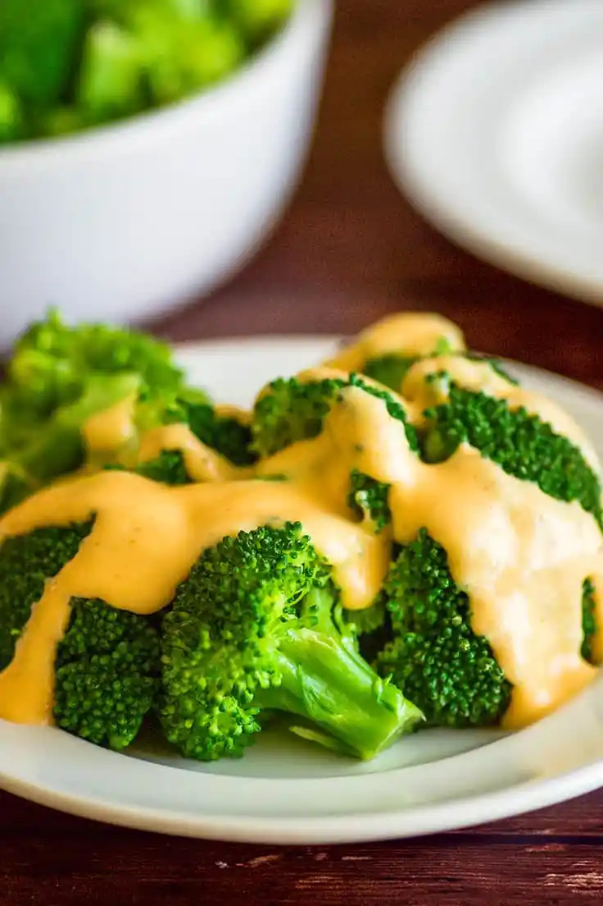

Cheese Sauce

Description
You’ll be so glad to have this little recipe in your back pocket because it’s so useful and versatile.
Ingredients
- Butter
- Milk
- Cheddar cheese
Steps
- You start with a roux made by melting the butter in a small pot and whisking in the flour until you get a lightly golden paste. Cooking the flour with butter first cooks the raw flour taste out of the mixture.
- Then slowly pour in the milk, being careful to whisk out any lumps as they form, and stir until you have a nice bubbly, creamy sauce.
- Once the sauce is thickened, turn off the heat and stir in the cheese a handful at a time. Add salt, pepper, and optional cayenne to taste, and voilà. Perfect cheese sauce ready to tasty up whatever you’re going to pour it over.